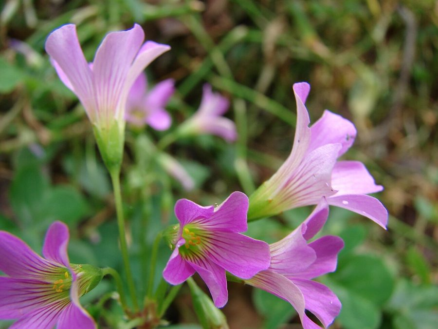

गुलाबी खट्टी मीठीPink Woodsorrel
Oxalis debilis · Oxalidaceae · FLR-0340

- Scientific name वैज्ञानिक नाम
- Oxalis debilis Kunth
- Family कुल
- Oxalidaceae
- Hindi हिंदी
- गुलाबी खट्टी मीठी
- Local names स्थानीय नाम
- pink woodsorrel, lilac oxalis, gulabi khatti meethi, oxalis debilis, oxalis corymbosa
- Status here यहाँ की स्थिति
- naturalized
- Movement आवागमन
- Resident, here all year
- Known from कहाँ दर्ज
- Others have published records from the wider Awadh–Purvanchal plain, none yet from Basti–Ayodhya अवध–पूर्वांचल से दूसरों के प्रकाशित अभिलेख, बस्ती–अयोध्या से अभी नहीं
- IUCN IUCN
- not evaluated
- Review समीक्षा
- not yet reviewed
When to look कब देखें
Expected mainly in January, February, March, April, September, October, November, December. मुख्यतः जनवरी, फ़रवरी, मार्च, अप्रैल, सितंबर, अक्टूबर, नवंबर, दिसंबर में अपेक्षित।
Uses and possibilities उपयोग और संभावनाएँ
Drawn from the documented uses in the profile below, where each is labelled traditional, current or a research lead. All uses →
Tell it apart from इनसे अलग पहचानें
गुलाबी खट्टी मीठी / Pink Woodsorrel
Oxalis debilis Kunth — Oxalidaceae
गुलाबी खट्टी मीठी — बगीचों की छायादार क्यारियों, गमलों, पुरानी नम दीवारों और बागों के नम कोनों में उगने वाला एक बहुत ही नाजुक, सुंदर कंदीय (बल्ब वाला) पौधा। इसकी पत्तियाँ तीन हिस्सों में कटी, दिल के आकार की (तिपतिया) होती हैं और चबाने पर चटपटी खट्टी लगती हैं। जाड़ों और बसंत में इसके ऊपर पतली डंडियों पर चमकीले गुलाबी-बैंगनी रंग के घंटी जैसे प्यारे फूल खिलते हैं।
Quick Identification त्वरित पहचान
| Feature | Description |
|---|---|
| Habit | Stemless perennial herb 10–30 cm tall arising from a scaly underground bulb (Gaur 1999) |
| Foliage | Radical, long-petioled, trifoliolate with obcordate leaflets notched at apex (Hooker 1874) |
| Glands | Underside of leaflets and calyx lobes bearing tiny translucent orange dots (Gaur 1999) |
| Inflorescence | Umbellate cymes of 4–12 flowers on slender radical scapes exceeding the leaves (Hooker 1874) |
| Corolla | Funnel-shaped, 1.5–2.2 cm across, purplish-pink or violet with deeper veins (Gaur 1999) |
| Bulbils | Clustered abundantly around the parent bulb, producing numerous daughter offsets |
Field tip: Look in damp shady garden corners and flower pots during the cool season for clover-like trifoliolate leaves dotted with orange specks beneath, topped by loose umbels of rose-pink funnel flowers.
हिंदी — कैसे पहचानें: जमीन के नीचे छोटा कंद, तीन हिस्सों में कटी दिल जैसी खट्टी पत्तियाँ, पत्तियों के नीचे बारीक नारंगी बिंदियां, और लंबी डंडी पर खिले गुलाबी-बैंगनी फूल।
Morphology शारीरिक संरचना
Biometrics (Hooker 1874; Gaur 1999):
| Measurement | Range |
|---|---|
| Plant height | 10–30 cm (Gaur 1999) |
| Petiole length | 8–25 cm (Hooker 1874) |
| Leaflet length | 1.2–3.5 cm (Gaur 1999) |
| Leaflet width | 1.5–4.5 cm (Gaur 1999) |
| Flower diameter | 1.5–2.2 cm (Gaur 1999) |
| Bulb diameter | 1.0–2.5 cm (Hooker 1874) |
Bulb and architecture: Acaulescent herb; stems absent above ground. Underground bulb globose or ovoid, enclosed by dark brown scaly scales, giving rise to numerous small stolon-like bulbils crowded around the base.
Leaves: All basal, arising directly from the subterranean bulb; petioles long, slender, cylindrical, sparsely pilose. Leaflets 3, sessile, obcordate, deeply notched at the apex, cuneate at the base, bright green and glabrous above, paler and appressed-pubescent beneath, bearing scattered microscopic orange or brownish glandular dots along the margins and lower surface.
Flowers and fruit: Inflorescence an umbelliform cyme of 4–12 flowers carried on an erect, leafless radical scape. Sepals 5, persistent, oblong-lanceolate, each bearing two prominent orange glands at the tip. Petals 5, free at base, obovate, spreading, rose-pink or violet-purple with a greenish-yellow throat. Stamens 10 in two whorls; styles 5. Capsule rare in Indian naturalized populations; propagation occurs almost exclusively via prolific subterranean bulbils.
हिंदी: पौधा बिना तने का होता है। पत्तियाँ सीधे जमीन के कंद से निकलती हैं और तीन टुकड़ों में दिल जैसी होती हैं। फूल की पंखुड़ियां गुलाबी और अंदर से हल्की पीली होती हैं। इसके नीचे कई छोटे-छोटे नए कंद बनते हैं।
Behaviour & Ecology व्यवहार एवं पारिस्थितिकी
Oxalis debilis is an adaptable shade-loving geophyte native to tropical South America. It has established widely across world subtropics via horticultural trade in ornamental bulbs.
The leaflets exhibit pronounced photonastic and nyctinastic movements: they fold downwards along their central midribs at dusk, under direct blazing midday sunlight, or during severe rainstorms, reopening when mild diffuse light returns. The high concentration of potassium oxalate crystals in the foliage imparts a sharp, acidic taste that deters generalist chewing caterpillars and herbivorous snails. Flowers open widely on bright, sunny mornings and are pollinated by foraging honey bees, small sweat bees, and hoverflies. In South Asia, seed capsules rarely mature; the plant spreads through human soil movement and the detachment of subterranean bulbils during garden cultivation.
हिंदी: शाम होते ही या तेज धूप पड़ते ही इसकी पत्तियाँ छाते की तरह नीचे झुककर बंद हो जाती हैं और सुबह फिर खुल जाती हैं। पत्तियों में खट्टा ऑक्सालिक एसिड होने से कीड़े इन्हें कम खाते हैं। यह कंदों से बहुत तेजी से फैलती है।
Life Cycle / Phenology जीवन चक्र एवं ऋतुचक्र
| Period | Phenological Event |
|---|---|
| September–October | Subterranean bulbils sprout following post-monsoon cooling and soil wetting |
| November–January | Lush foliage expands in shaded courtyards and nursery beds |
| February–April | Peak flowering display with abundant scapes of pink funnel-shaped flowers |
| May–June | Foliage withers completely; daughter bulbils enter dormant summer quiescence |
The underground bulbs survive high summer soil temperatures up to the onset of the monsoon, buried safely within the topsoil.
हिंदी: कुंवार के महीने में कंद से नए पत्ते फूटते हैं। पूस और माघ में पत्तियाँ घनी हो जाती हैं और फागुन-चैत में सुंदर गुलाबी फूल खिलते हैं। जेठ की भयंकर गर्मी में पत्तियाँ सूख जाती हैं और कंद जमीन में सो जाता है।
Associated Species / Interactions संबद्ध प्रजातियाँ एवं पारस्परिक क्रियाएं
- Pollinators: Visited on sunny mornings by Asian Honey Bee, small halictid bees, and syrphid flies.
- Micro-fauna: Earthworms and soil centipedes shelter among dense bulbil clusters beneath the soil surface.
- Companions: Grows in shaded garden soil alongside Prickly Chaff Flower and Black Nightshade.
हिंदी: इसके फूलों पर सुबह के समय मधुमक्खियाँ रस लेने आती हैं। यह बगीचों की क्यारियों में मकोय और अन्य छोटे पौधों के साथ छाया में उगती है।
Pests and Diseases कीट एवं रोग
- Oxalis rust (Puccinia oxalidis) causes conspicuous bright golden-orange pustules on the lower surface of leaflets during humid late winter.
- Bulb rot occurs if potting soils remain waterlogged under poorly drained, anaerobic conditions.
- Snails and slugs occasionally rasp holes in tender young emerging petioles during damp foggy weather.
हिंदी: जाड़ों के अंत में पत्तियों के नीचे नारंगी रंग के फफूंद के दाने (गेरुआ) निकल आते हैं और अधिक पानी भरने पर कंद सड़ जाता है।
Agricultural / Human Relevance कृषि एवं मानवीय उपयोगिता
Horticultural and Culinary Natural History:
- Garden weed and ornamental. Widely cultivated intentionally in pots and shaded borders for its attractive pink flowers, but frequently becomes a persistent, difficult-to-eradicate weed in nurseries due to brittle bulbil clusters.
- Traditional wild acidulant. Leaves have a long history of traditional consumption in rural diets as a sour garnish, wild chutney ingredient, or thirst-quencher ("khatti meethi"). This is a record of traditional use, not medical advice.
- Topsoil stabilization. Rapidly carpets bare shaded garden beds and nursery floors, suppressing dust and preventing rain-drop soil compaction.
Today. Encountered in domestic gardens, plant nurseries, and shaded temple grounds throughout urban and rural eastern Uttar Pradesh.
हिंदी: इसके सुंदर फूलों के कारण लोग इसे गमलों में लगाते हैं, लेकिन यह तेजी से फैलकर खरपतवार बन जाता है। गाँव के बच्चे इसकी खट्टी पत्तियों को बड़े चाव से खाते हैं और इसकी चटनी भी बनाई जाती है।
Expected Locally स्थानीय संभावना एवं उपस्थिति
Not a field record. Written from published accounts for eastern Uttar Pradesh. No confirmed local sighting yet — if you have seen it, that is what the atlas needs.
अभी तक स्थानीय पुष्टि नहीं। यह विवरण प्रकाशित स्रोतों से है, किसी अवलोकन से नहीं।
Expected in eastern Uttar Pradesh across shaded domestic gardens, nursery pots, brick courtyard corners, and orchards across Basti, Khalilabad, and Ayodhya. GBIF holds published records from the wider Awadh–Purvanchal plain, none yet from Basti–Ayodhya. A first local record would be a dated photograph of the trifoliolate leaves with orange glands and the umbellate rose-pink flowers, submitted with locality details through the project's About page.
Distribution भौगोलिक वितरण
Global range: Native to South America (Brazil, Argentina, Paraguay); introduced and naturalized across North America, Europe, Africa, Asia, and Australasia.
In India: Naturalized throughout the hill stations of the Himalayas and the Nilgiris, and across the northern plains in gardens and orchards (Hooker 1874).
In Uttar Pradesh: Common in shady garden grounds, old residential estates, and orchards throughout the plains (Duthie 1903).
In Basti district / eastern UP: Expected in garden beds, plant nurseries, and shaded courtyards.
हिंदी: दक्षिण अमेरिका का मूल निवासी यह पौधा आज भारत के पहाड़ों और मैदानी शहरों के बाग-बगीचों में खरपतवार के रूप में स्थापित हो चुका है।
Research Questions शोध प्रश्न
- What is the average multiplication rate of subterranean bulbils per parent bulb in Awadh garden soils? / अवध के बगीचों की मिट्टी में एक कंद से एक मौसम में कितने नए छोटे कंद बनते हैं?
- Which native sweat bee species are the most frequent flower visitors in shaded suburban gardens? / बगीचों की छाया में खिले इसके फूलों पर कौन-सी छोटी मधुमक्खियाँ सबसे ज्यादा आती हैं?
- What is the thermal threshold required to break summer bulbil dormancy in alluvial silts? — Expose dormant bulbs to temperature regimes and record sprouting latencies.
- Does Oxalis rust significantly reduce carbohydrate storage in daughter bulbils? — Compare bulbil dry mass produced by heavily infected versus clean stands.
- How does soil pH influence the concentration of soluble oxalic acid in leaf blades? / क्या मिट्टी के अम्लीय होने से पत्तियों के खट्टेपन में कोई बदलाव आता है?
Similar Species समान प्रजातियाँ
| Species | How to tell apart | हिंदी |
|---|---|---|
| Creeping Woodsorrel (Oxalis corniculata) | Stems creeping above ground, rooting at nodes; flowers yellow; no bulb | जमीन पर रेंगता तना, छोटे पीले फूल |
| Touch-me-not (Mimosa pudica) | Compound bipinnate leaves sensitive to touch; woody stems with prickles | छुईमुई, कटी पत्तियाँ, तने पर कांटे |
| Prickly Chaff Flower (Achyranthes aspera) | Tall erect herb; simple opposite leaves; long prickly flower spikes | सीधा खड़ा पौधा, कांटेदार लंबी बाली |
Field rule: Stemless herb from a scaly underground bulb with trifoliolate notched leaves bearing orange glands beneath, and umbels of funnel-shaped purplish-pink flowers identifies Oxalis debilis.
Taxonomy & Classification वर्गिकी एवं वर्गीकरण
Original description. Described by Carl Sigismund Kunth in 1822 in Nova Genera et Species Plantarum, vol. 5, p. 236. The specific epithet debilis means weak or frail, referring to its slender petioles and scapes.
Subspecies. Treated in many historical works as Oxalis corymbosa DC.; modern taxonomists recognize Oxalis debilis var. corymbosa (DC.) Lourteig as the widespread naturalized variety.
Family and order placement. Belongs to the woodsorrel family Oxalidaceae, in the order Oxalidales.
Phylogenetic notes. Characterized by its subterranean scaly bulbs, acaulescent habit, obcordate leaflets with marginal calli, and pseudoumbellate inflorescences.
IUCN status rationale. Not evaluated in the master expansion list; it is a globally widespread naturalized geophyte with no conservation risks.
हिंदी: कार्ल कुन्थ ने 1822 में इसका पहला वैज्ञानिक विवरण लिखा था। पुरानी किताबों में इसे 'ऑक्सालिस कोरिम्बोसा' नाम से भी जाना जाता है। यह ऑक्सालिडेसी कुल का सदस्य है।
Photo Gallery छायाचित्र दीर्घा
No photos yet — add field photos to media/species/pink_woodsorrel/ and run node scripts/sync_photos.js.
Photos needed आवश्यक फोटो
- [ ] Cluster of flowering plants growing in a shady garden border or flower pot (गमले या क्यारी में खिले गुलाबी फूलों का गुच्छा)
- [ ] Close-up of open rose-pink flower showing yellow throat (खिले हुए गुलाबी फूल और अंदर के पीले भाग का क्लोज-अप)
- [ ] Detail of trifoliolate leaves showing notched leaflets and orange gland dots (तीन हिस्सों वाली पत्ती और नारंगी ग्रंथियों का चित्र)
References संदर्भ सूची
- Candolle, A.P. de (1824). Prodromus Systematis Naturalis Regni Vegetabilis, vol. 1, p. 696. Treuttel et Würtz, Paris.
- Duthie, J.F. (1903). Flora of the Upper Gangetic Plain and of the Adjacent Siwalik and Sub-Himalayan Tracts, vol. 1, p. 130. Government Printing, Calcutta.
- Gaur, R.D. (1999). Flora of the District Garhwal, North West Himalaya, p. 544. TransMedia, Srinagar (Garhwal).
- Hooker, J.D. (1874). The Flora of British India, vol. 1, p. 437. L. Reeve & Co., London.
- Kunth, C.S. (1822). Nova Genera et Species Plantarum, vol. 5, p. 236. Librairie Grecque-Latine-Allemande, Paris.
- Lourteig, A. (1980). Oxalidaceae. In Flora of Panama, Annals of the Missouri Botanical Garden, 67(4), pp. 823–850.
- GBIF Occurrence Data — Oxalis debilis Kunth, India (2025).
Source file: species/flora/weeds/pink_woodsorrel.md